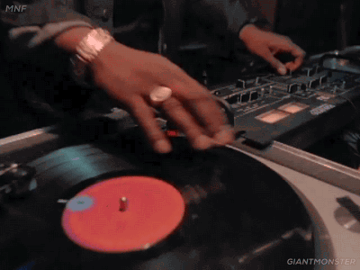

Yes, though there were electronic music groups out there before hip hop's advent, it'd be a boldfaced lie to not point out that the vast majority of electronica groups have hip hop to thank for some level of music technique.
DJing, beatmaking, and turntablism was one of the founding pillars of hip hop - and any time that you hear a sick beat in a hip hop track, you'll understand why. Hip hop was actually one of the first genres of music to really get innovative with beat drops and was the genre that brought record scratches and beat matching to the forefront.
Beat drops? Those are thanks to hip hop. So, EDM fans have hip hop to thank for that.
Turntable scratches? Very much a hip hop thing, and that's still obvious.

Fading? Also a hip hop technique, commonly applied to pop music, rock music, and even industrial.
Remixes? Yes, hip hoppers majorly helped move this along too, even though actual remix processes started to develop in the 50s.